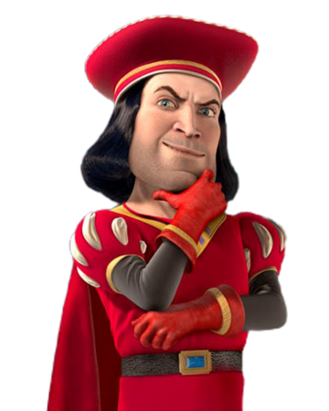

Cool Information
Shrek is fantasy comedy computer-animated film released to theaters in 2001. DreamWorks Animation purchased the idea in 1995 and Jeffrey Katzenberg began active development It grossed $484 million worldwide which lead to the creation of 3 sequels movies. With a production budget of $60 million, Shrek became a huge success and is a movie beloved by many adults and children around the world.
Main Characters
(“List of Shrek characters.” Wikipedia, Wikimedia Foundation, 29 September 2021, https://en.wikipedia.org/wiki/List of Shrek characters)
Shrek
Shrek is the lead character in all of the films. He prides himself on being a big, green, terrifying ogre and is grumpy and rude, but is also caring and brave. He begins the series as an unsociable hermit until he meets his soon-to-be best friend, Donkey. In a deal with Lord Farquaad, he and Donkey embark on a quest to save Princess Fiona from the castle in which she was confined. Despite their differences, Shrek and Fiona fall in love, marry at the end of the first film, and have three ogre babies in the third film.
Donkey
Donkey is a talking donkey. He escaped being sold by his owner, an old woman, and eventually met and allied with Shrek. He is Shrek's best friend, but it always bothers or irritates the ogre. He has also become the frequent companion of the honorable mercenary Puss In Boots, although the two always fight or disagree from one another. Donkey loves to sing and hum, as seen in all the franchise films. He is also the Dragon's husband and father of the Dronkeys, whose passion for sweets inspired the name of each one of them.
Princess Fiona
Princess Fiona is the princess of Far Far Away, the daughter of late King Harold and Queen Lillian, cousin of King Arthur Pendragon, and Shrek's wife from the end of the first film on. She begins the series as a beautiful princess who transforms into an ogress every night when the sun sets. At the end of the first film, the transforming spell is broken and she permanently takes the form of an ogress when she realizes that Shrek is her true love. In Shrek 2, Fiona becomes human again and goes back to her ogress form permanently.
Puss In Boots
Puss In Boots is Shrek's best friend along with Donkey. Loosely based on the fairy tale character Puss In Boots as well as being a kind of parody of Zorro, he is a smooth-talking cat with a Spanish accent, usually wearing a cavalier's hat, a belt with a sword, a small black cape, and small Corinthian leather boots. Puss first appears in Shrek 2, much like Dragon in the first film. He often overpowers his enemies by distracting them with his "cute kitten" looks. He also exhibits common cat behavior such as coughing up hairballs and chasing lights, usually resulting in his defeat or capture. For obvious reasons, he does not appear in the first film or 4D ride, though he does make a non-speaking cameo in the musical.


Main Villains
(“List of Shrek characters.” Wikipedia, Wikimedia Foundation, 29 September 2021, https://en.wikipedia.org/wiki/List of Shrek characters)
Lord Farquaad
Lord Farquaad is the short-in-stature, ruthless ruler of Duloc. In his pursuit of perfection, Farquaad attempts to rid his kingdom of Fairy Tale creatures, offering a bounty for their capture. But because Farquaad is not of royal blood, he cannot become a king until he marries a princess. He decides that Princess Fiona can be his perfect wife and queen but first she must be rescued from her tower, which is guarded by a fire-breathing dragon. Unwilling to perform the rescue himself, Farquaad holds a tournament to select the knight that will rescue Princess Fiona. But Shrek and Donkey turn up and defeat the knights, so Farquaad decides to send Shrek on the quest instead. After bringing Fiona to Farquaad, Shrek realizes that he is in love with her so to save her, Shrek calls for the dragon who devours Farquaad, ending his life.
Fairy Godmother
The Fairy Godmother is a scheming, conniving opportunist, loosely based on the fairy-tale Cinderella's "Fairy Godmother". She seeks to get the best for herself and her son Prince Charming, rather than others. She takes an instant dislike to Shrek, and when he tries to ask her why Fiona is not happy, she rudely points out that "ogres don't live happily ever after." She then briefly insults Shrek, calling his fingers "dirty green sausages." She often resorts to blackmail and trickery through magic to get her way. She is a stress eater ("someone get me something deep fried and smothered in chocolate," when Shrek makes a mess of her potion factory, and during her talk with Harold in the carriage about Shrek, it is shown that Harold ruined her diet when she orders food from Friar's Fat Boy). It is a popular theory that she placed the spell on Fiona that makes her turn into an ogre at night as part of her plan to get Charming to marry her.
Prince Charming
Prince Charming is the son of the Fairy Godmother. He is very handsome and was supposed to rescue Princess Fiona from her dragon-guarded tower. Prince Charming is characterized as an arrogant, vain and spoiled mama's boy and the Fairy Godmother wants him to marry Fiona so that he can become king. He later deceives Fiona into believing that he is Shrek, having been turned human by a "Happily Ever After" potion. His heartless attitude shows through the disguise and Fiona realizes the truth, knocking him unconscious with a headbutt. In Shrek the Third, Charming gathers all the evil characters from fairy tales that were at the Poison Apple Bar to get their revenge and their own "Happily Ever Afters". After they invade the main castle of Far Far Away, Charming prepares a stage show in which he will kill Shrek in front of the entire kingdom. Shrek takes part in the show, but his allies come to the rescue. Arthur Pendragon then convinces the fairytale villains to give up their evil ways. Charming is furious and attacks Artie only to be stopped by Shrek, who throws him towards a prop tower made of stone. Dragon purposely knocks the tower over and it lands on Charming, crushing him to death.
Rumpelstiltskin
Rumpelstiltskin is an evil short con man who makes magical deals (complete with contracts), but gives them a horrible twist in fate for their lives. In Shrek Forever After, the story begins during the time frame of the first Shrek movie. Fiona's parents are about to sign their kingdom over to Rumpelstiltskin to break Fiona's curse, as Fiona's mother believes that the Fairy Godmother cannot be trusted, though her father is reluctant to trust Rumpelstiltskin. At the last moment, they learn that Fiona has been rescued from the tower and do not sign the contract. Rumpelstiltskin is then furious and vows revenge on Shrek. The setting then moves forward to after Shrek the Third. Seeing Shrek missing his old life as a free and terrifying ogre, Rumpelstiltskin makes a deal with him, tricking him into giving up the day he was born. This deal enables Rumpelstiltskin to be the ruler of Far Far Away by creating an alternate reality in which Shrek never existed and therefore never rescued Fiona. Shrek tries to reverse the deal by using the exit clause - a true love's kiss - before 24 hours elapse and he disappears forever. By the time Shrek's 24 hours are almost up, but at the last second, Fiona kisses the fading Shrek. Shrek then puts Rumpelstiltskin in a cage.
